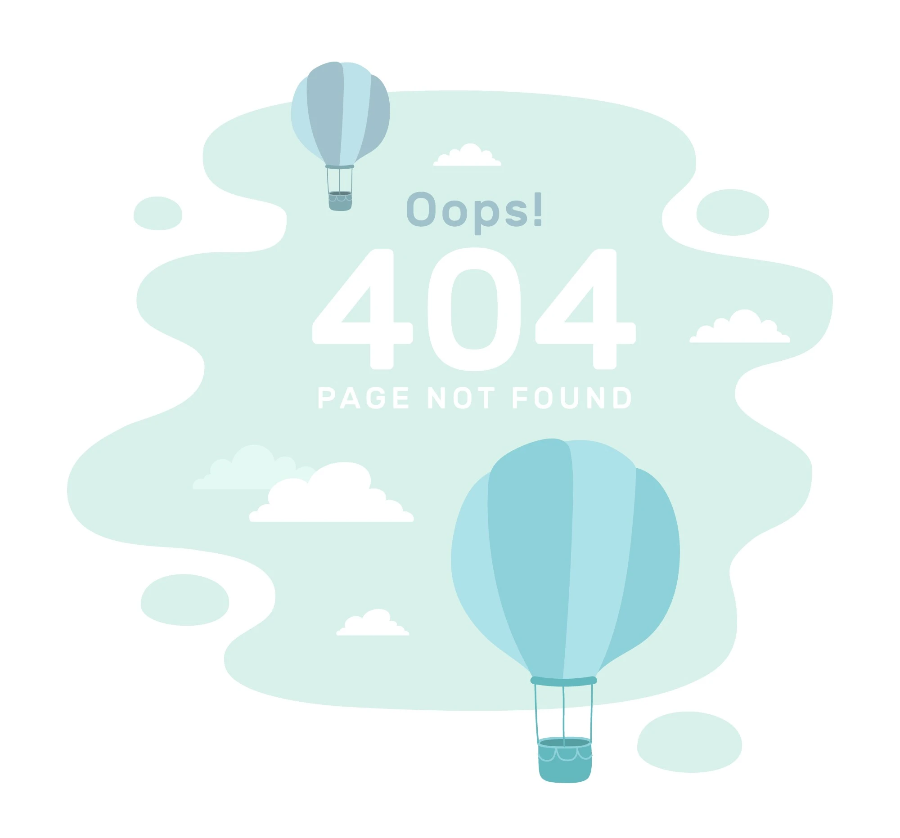

<mat-card>
    <div class="container-not-found">
        
    </div>
    <button mat-flat-button color="accent" class="btn" (click)="backToHome()">
        <div class="btn-go-back">
            <span>
                Volver al inicio
            </span>
        </div>
    </button>
</mat-card>